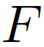
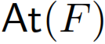
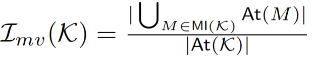

For a set of formulas  let  denote the set of propositions appearing in . The MusVar inconsistency measure  is then defined as the ratio of the number of the number of propositions appearing in any minimal inconsistent subsets and the total number of propositions:
is then defined as the ratio of the number of the number of propositions appearing in any minimal inconsistent subsets and the total number of propositions:

The MusVar inconsistency measure has been proposed in [Xiao:2012].